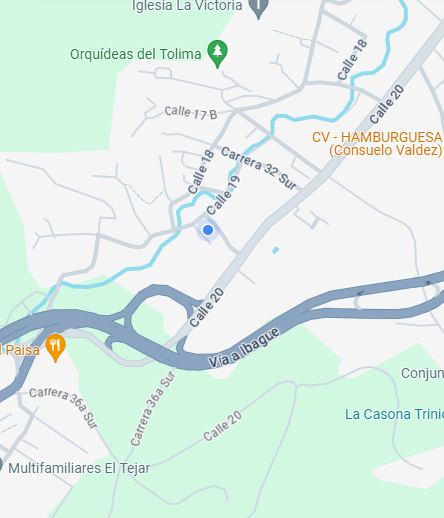

Hola, soy Cristian Carmona.Técnico en Redes y Mantenimiento de Equipos de Cómputo, con experiencia práctica en soporte técnico, instalación de redes estructuradas y mantenimiento de hardware y software. Durante mi paso por el Club Campestre de Ibagué, desempeñé funciones clave como Técnico en Redes, realizando instalación de puntos de red, crimpado de cables UTP, configuración de impresoras y equipos POS, instalación de cámaras de seguridad y recuperación de cuentas de usuarios. Además, complemento mi perfil técnico con conocimientos en desarrollo web, aplicando tecnologías como HTML y CSS para crear soluciones tecnológicas integrales.
Formación técnica con enfoque práctico en la instalación, configuración y mantenimiento de redes de datos. Capacitado para realizar crimpado de cables UTP, instalación de puntos de red, diagnóstico de conectividad, instalación y mantenimiento de equipos de cómputo, así como soporte técnico a usuarios. Durante mi formación y experiencia laboral, he aplicado estos conocimientos en entornos reales como el Club Campestre de Ibagué, asegurando una infraestructura de red estable y funcional.
Formación tecnológica orientada al diseño, desarrollo y análisis de aplicaciones de software. He adquirido habilidades en programación web, bases de datos y metodologías de desarrollo ágil. Como tecnólogo, me especializo en construir soluciones funcionales y escalables, aplicando tecnologías como PHP, Laravel, HTML, CSS, JavaScript, y bases de datos como MySQL. Mi enfoque combina lógica de programación, resolución de problemas y una sólida comprensión del ciclo de vida del software.
Proyecto formativo desarrollado como parte de mi formación en el SENA. Consiste en una plataforma web integral que permite a los usuarios agendar citas para mantenimiento de equipos de cómputo y adquirir productos tecnológicos. Fui responsable del diseño, desarrollo y despliegue de la plataforma utilizando tecnologías como HTML, CSS, JavaScript, PHP y MySQL, además de aplicar principios de experiencia de usuario (UX) y metodologías ágiles como Scrum.
Durante mis prácticas profesionales en el Club Campestre de Ibagué (junio a diciembre de 2023), desempeñé el rol de Técnico en Soporte y Redes, realizando tareas esenciales para el buen funcionamiento de la infraestructura tecnológica del club. Me encargué de la instalación de puntos de red, crimpado de cables UTP y mantenimiento de la red interna. Además, llevé a cabo formateo y mantenimiento preventivo y correctivo de equipos de cómputo, instalación de cámaras de seguridad, configuración de impresoras tanto de oficina como del sistema POS, y recuperación de cuentas e información importante para los asociados. Esta experiencia me permitió aplicar de manera práctica mis conocimientos técnicos en un entorno real y exigente, brindando soporte eficaz a las distintas áreas operativas del club.
